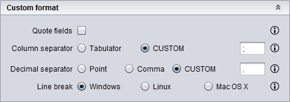

This operation allows you to import a set of CSV files containing spots data obtained with Progenesis SameSpots.
SameSpots CSV format
This option allows you to import spots data from a set of CSV files obtained with Progenesis SameSpots report (i.e. one or more CSV files). This files are obtained by using the File/Export spot measurements option of this software, exporting only spot number, p-value, fold, normalized Volume and volume. For further details on this format, please, check the sample data provided with the tutorial that can be found at the official webpage.
Usage
You can execute this operation by clicking the menu option Import/SameSpots/Import CSV.
A dialog will appear allowing you to choose the directory containing the CSV files and other parameters to filter the identifications to be loaded. As you can see in the following image, this dialog requires you to provide the following information:
Import SameSpots CSV dialog
As commented above, you can customize the CSV format by selecting the Custom format option. When you select this option, the following custom format panel will be shown in the dialog. The options included in this panel will allow you to customize the CSV format:

Custom CSV panel
After clicking the Ok button, the imported spots data is added as a SameSpots analysis datatype to the clipboard and automatically opened in the SameSpots analysis editor.